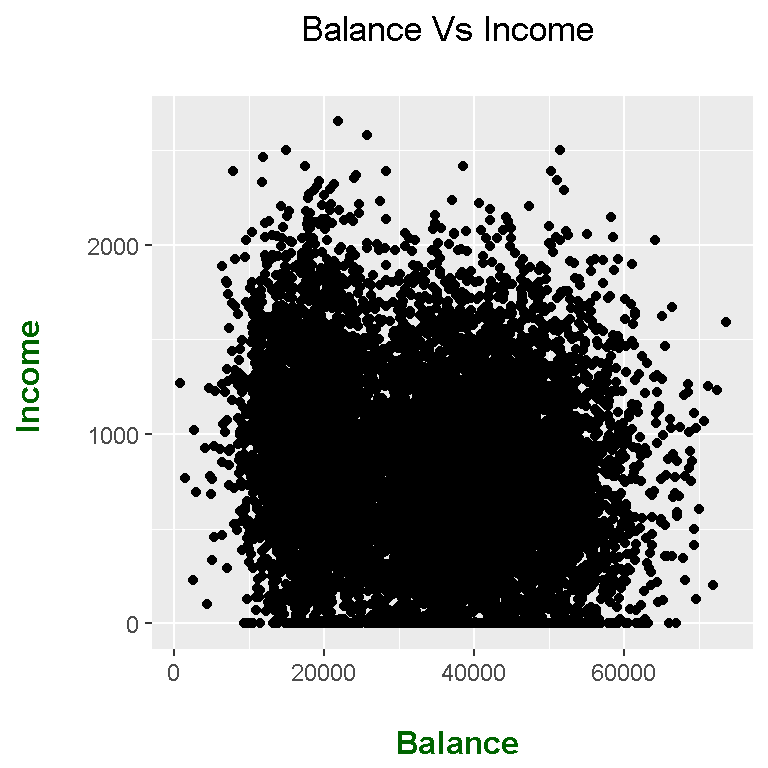
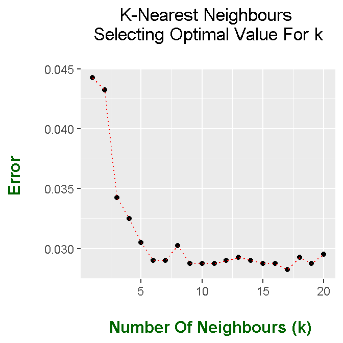

Hi. This page featured the K Nearest Neighbours algorithm in machine/statistical learning. The R programming language is used here.
Udemy Course - R For Data Science & Machine Learning By Jose Portilla
Introduction To Statistical Learning With Applications In R Book
R Graphics Cookbook By Winston Chang
The Introduction To Statistical Learning With Applications In R Book comes with a collection of datasets that are available in R. These datasets are in the ISLR library. To install the package use install.packages("ISLR").
The credit card default data from ISLR is from Default. I take a brief look of the dataset with the use of head(), tail() and str() functions.
# K-Nearest Neighbours Practice In R
# Reference: Udemy Course - R For Data Science & Machine Learning By Jose Portilla
# Book & Library Reference: Introduction To Statistical Learning With R
# Book Info Link: https://www-bcf.usc.edu/~gareth/ISL/
library(ISLR)## Warning: package 'ISLR' was built under R version 3.4.4library(ggplot2)
# Load data into math_data variable:
default_data <- Default
# Head and tail of data:
head(default_data)## default student balance income
## 1 No No 729.5265 44361.625
## 2 No Yes 817.1804 12106.135
## 3 No No 1073.5492 31767.139
## 4 No No 529.2506 35704.494
## 5 No No 785.6559 38463.496
## 6 No Yes 919.5885 7491.559tail(default_data)## default student balance income
## 9995 No Yes 172.4130 14955.94
## 9996 No No 711.5550 52992.38
## 9997 No No 757.9629 19660.72
## 9998 No No 845.4120 58636.16
## 9999 No No 1569.0091 36669.11
## 10000 No Yes 200.9222 16862.95# Structure of data:
str(default_data)## 'data.frame': 10000 obs. of 4 variables:
## $ default: Factor w/ 2 levels "No","Yes": 1 1 1 1 1 1 1 1 1 1 ...
## $ student: Factor w/ 2 levels "No","Yes": 1 2 1 1 1 2 1 2 1 1 ...
## $ balance: num 730 817 1074 529 786 ...
## $ income : num 44362 12106 31767 35704 38463 ...
It is a good idea to check if there are any missing values (NAs).
### Some data cleaning:
# Check if theres any missing data (NAs):
any(is.na(default_data))## [1] FALSEsum(is.na(default_data))## [1] 0You can see what the data looks like with a simple scatterplot with R’s ggplot2 graphics.
# Initial scatterplot Of Balance vs Income:
ggplot(default_data, aes(x = income ,y = balance)) +
geom_point() +
labs(x = "\n Balance", y = "Income \n",
title = "Balance Vs Income \n") +
theme(plot.title = element_text(hjust = 0.5),
axis.title.x = element_text(face="bold", colour = "darkgreen", size = 12),
axis.title.y = element_text(face="bold", colour = "darkgreen", size = 12),
legend.title = element_text(face="bold", size = 10))
The scatterplot contains a lot of points as there are 10000 observations in the dataset. Notice how there are observations with zero income but with non-negative balances.
Before running the K-Nearest Neighbours Algorithm, it is important to scale the numeric columns such that the numeric columns have a variance of 1.
### Standardize Variables With Scaling
# Standarize the dataset using "scale()" R function
default_data_std <- scale(default_data[, c(3:4)])
defaults_outcome <- default_data[, 1]
# Variance-Covariance Matrix:
var(default_data_std)## balance income
## balance 1.0000000 -0.1522434
## income -0.1522434 1.0000000
This next part deals with building a test set and a training set from the credit card default data. I am using 60% of the data for building the training set and the other 40% for the test set. Predictions from the K-Nearest Neighbours Algorithm will be compared to the real outcomes from the test set. In R, the sample() function is used for building the training set.
# Test set and training set:
# Reference: https://stackoverflow.com/questions/17200114/how-to-split-data-into-training-testing-sets-using-sample-function
## set the seed to make your partition reproducible
set.seed(311)
train_ind <- sample(seq_len(nrow(default_data_std)), size = floor(0.60 * nrow(default_data_std)))
train_data <- default_data_std[train_ind, ]
train_defaults <- defaults_outcome[train_ind]
test_data <- default_data_std[-train_ind, ]
test_defaults <- defaults_outcome[-train_ind]
After the preprocessing work, the knn() function in R can be used for implementing the K-Nearest Neighbours algorithm.
## KNN:
# Predict if there's a deafult based on balance and income
# (not factoring in student)
library(class)
set.seed(101)
predicted_defaults <- knn(train_data, test_data, train_defaults, k = 1)
head(predicted_defaults)## [1] No No No No No No
## Levels: No YesError rates can be determined by finding the percentage of cases where the predictions do not match the observations from the test set. This is done with the mean() function and the use of !=.
# Compare observations from test set to predictions. This is the error rate with !=.
mean(test_defaults != predicted_defaults)## [1] 0.04425# KNN With k = 3:
predicted_defaults <- knn(train_data, test_data, train_defaults, k = 3)
head(predicted_defaults)## [1] No No No No No No
## Levels: No Yesmean(test_defaults != predicted_defaults)## [1] 0.03425# KNN With k = 5:
predicted_defaults <- knn(train_data, test_data, train_defaults, k = 5)
head(predicted_defaults)## [1] No No No No No No
## Levels: No Yesmean(test_defaults != predicted_defaults)## [1] 0.0305
In the KNN algorithm above, there was not much thought when it came to choosing the k-value in the knn() function. The numbers 1, 3 and 5 were used without much thought.
With the use of a for loop and elbow plot, we can visually determing which value(s) of k would be good/optimal in the KNN algorithm.
# For Loop approach for finding optimal k"
predicted_defaults = NULL
error_rate = NULL
for(i in 1:20){
set.seed(101)
predicted_defaults <- knn(train_data, test_data, train_defaults, k = i)
error_rate[i] = mean(test_defaults != predicted_defaults)
}
The error rates are stored in a data frame which is ready for plotting in ggplot2.
# Elbow Method Plot With ggplot2
library(ggplot2)
error_df <- data.frame(k = 1:20, error_rate)
error_df## k error_rate
## 1 1 0.04425
## 2 2 0.04325
## 3 3 0.03425
## 4 4 0.03250
## 5 5 0.03050
## 6 6 0.02900
## 7 7 0.02900
## 8 8 0.03025
## 9 9 0.02875
## 10 10 0.02875
## 11 11 0.02875
## 12 12 0.02900
## 13 13 0.02925
## 14 14 0.02900
## 15 15 0.02875
## 16 16 0.02875
## 17 17 0.02825
## 18 18 0.02925
## 19 19 0.02875
## 20 20 0.02950# Elbow plot with ggplot2 (Looks like k = 6 is good)
ggplot(error_df, aes(x = k ,y = error_rate)) +
geom_point() +
geom_line(lty="dotted",color='red') +
labs(x = "\n Number Of Neighbours (k)", y = "Error \n",
title = "K-Nearest Neighbours \n Selecting Optimal Value For k \n") +
theme(plot.title = element_text(hjust = 0.5),
axis.title.x = element_text(face="bold", colour = "darkgreen", size = 12),
axis.title.y = element_text(face="bold", colour = "darkgreen", size = 12),
legend.title = element_text(face="bold", size = 10))
Good values for k include 6, 7 and 9.